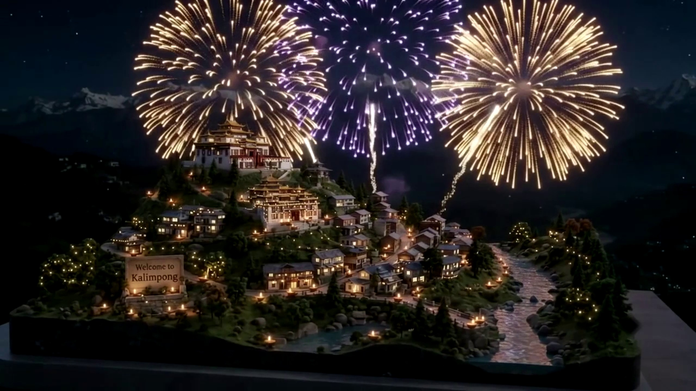

Reimagining Himalayan exploration through glassmorphism, 3D topographical dioramas, and festive interactive waypoints inspired by the video’s high-tech UI presentation.

Monastery ridge illuminated by 1,080 butter lamps for Diwali.
Traditional stone entryway welcoming travelers with marigolds.
Glittering waters carrying floating offerings down the valley.
Consecrated by the Dalai Lama in 1976, the Zang Dhok Palri Phodang houses rare Tibetan Kangyur scriptures. During Diwali night, its golden tiered pagodas are crowned with fireworks visible across Sikkim and Darjeeling.
Traditional wooden cottages and colonial verandas along Rishi Road are lined with rows of earthen lamps. Families gather in their courtyards singing Deusi-Bhailo carols while sharing freshly fried Sel Roti.
As darkness envelops the gorge 1,000 meters below, the silver currents of the Teesta River catch the gleam of paper lanterns released from the ridges, mirroring the constellation of mountain town lights.
Click or tap anywhere across the starlit mountain sky below to illuminate Kalimpong. Choose firework styles or release glowing paper lanterns (Fanush) drifting into the Himalayan breeze.
In Kalimpong and the Darjeeling hills, Diwali blends seamlessly into the 5-day festival of Tihar — an ancient celebration honoring animals, nature, family bonds, and the goddess Laxmi.
Mountain dogs are draped with fragrant marigold garlands (Sayapatri) and blessed with vermilion red tilaks, honoring their loyal companionship and spiritual guardianship in the hills.
Every wooden lintel, flower pot, and mountain courtyard is adorned with earthen oil lamps. Footprints made with rice paste guide goddess Laxmi into homes filled with love and warmth.
Youth troupes wander through pine mist with acoustic guitars and Madal drums, serenading each household with melodic folk stories and festive blessings under the night stars.
Sisters bless brothers with multi-colored 7-shade rainbow tikas. Families feast on golden ringed crispy Sel Roti, spiced potatoes (Alu Dum), and steaming Darjeeling tea.
Join our virtual shrine. Light an earthen lamp, dedicate a blessing for loved ones or travelers, and watch your diya float into the Himalayan night sky.
Dedicate a Diya or Sky Lantern that will illuminate the sanctuary for all visitors.
Click any floating lantern, clay diya, or river lotus to reveal who lit it
Experience the audio ambiance of an autumn Himalayan evening generated in real-time with Web Audio API. Blend mountain wind, night pine crickets, and sacred singing bowls.
Zero audio file downloads — 100% procedurally synthesized in your browser.